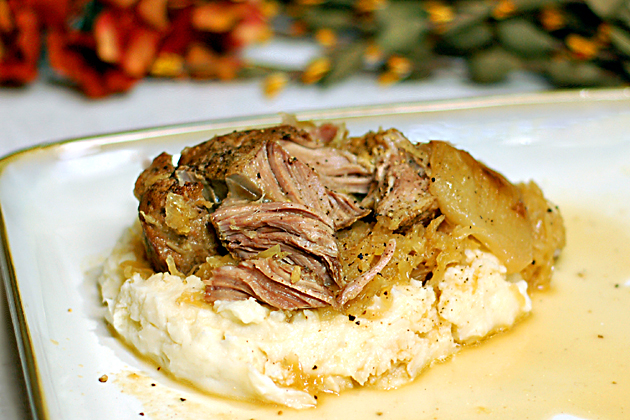

Pork and Sauerkraut

Home
A sweet and savory mix of slow roasted pork loin, tangy sauerkraut, and sweet apple butter.
A new year staple! This "set it and forget it" slow cooker recipe will be an instant crowd pleaser! Throw all your ingredients in in the morning and have a delicious and cozy meal at dinner time.
Ingredients
- 1 pork loin roast
- 1 onion chopped
- 1 cup or so of apple butter
- 1 jar or bag of sauerkraut with juice
- 1 pint of apple juice
- 1 tbs of brown sugar
- salt and pepper to taste
Directions
- Dab pork loin dry and sear in a hot pan to develop a crust.
- Place pork loin in slow cooker and top with all other ingredients.
- Cook on low for at least 8 hours to allow pork to break down. Once it falls apart like butter it is ready to eat.
- Enjoy!